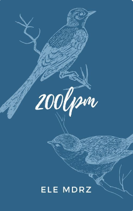
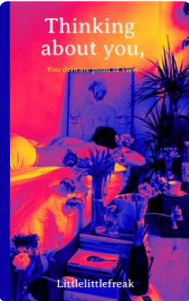

Jaque al rey | MAJOS // JUANTIN |
San Sebastián, Guipúzcoa, marzo de 2024
Habían pasado los años.
Pero aquella tarde de mediados de marzo la vida (su trabajo) decidió volver a unirlos, ponerlos cara a cara y obligarles a ser sinceros consigo mismos.
Quizás porque el destino sabía que tan solo quedaba una oportunidad para hacer frente a todo lo que alguna vez sintieron.
La última.
¿Y ahora qué harán con todo lo que un día callaron si el destino les volvía a jugar una mala pasada?

Jugar a la contra (por ti)
Martin acostumbraba a jugar para divertirse con un balón pegado a los pies que le hacía sentirse invencible, pero entonces apareció quien le hizo marcar el gol más importante de su vida. Él rompió sus esquemas, prendió fuego a lo que estaba herido y se armó de valor para conquistar su corazón.
Juanjo siempre jugaba para ganar, porque un buen día soñó con escribir una página en la historia del fútbol, hasta que lo conoció. Él nubló sus sentidos, desordenó sus prioridades y le hizo saber que al cielo también se podía llegar ardiendo en el infierno.

200 latidos por minuto
Martin piensa que Madrid está lleno de miradas que esquivan, de hombres aturdidos por demasiadas mujeres, de amigos que nunca están y de almas ingobernables como Juanjo que navegan ese ambiente como si hubieran nacido con ese veneno dentro.
Martin sabe que hasta los tontos tienen un tope, pero los límites parecen borrarse cuando entra a trabajar en el hospital en el que le conoce a él.
30 días - Juantin AU
Juanjo es un "Don Juan" capaz de conquistar todo el mundo, menos a quien realmente el desea. ¿Podrá uns apuesta de 30 días cambiar las cosas?

Thinking about you, your delicate point of view
Es la desesperación que se crea entre el suelo y el techo de cristal que es la fama, aquel miedo de ser olvidado el que le llevo a Juanjo Bona a cazar a su nueva estrella.
Lo que no sabía era que en el resultado final de su exposición se reflejaría un amor inesperado.
O donde Juanjo es un fotógrafo exitoso y Martin el hombre más especial que ha visto.